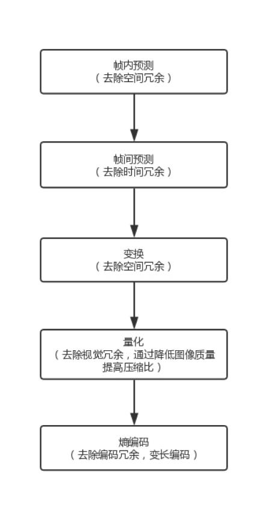
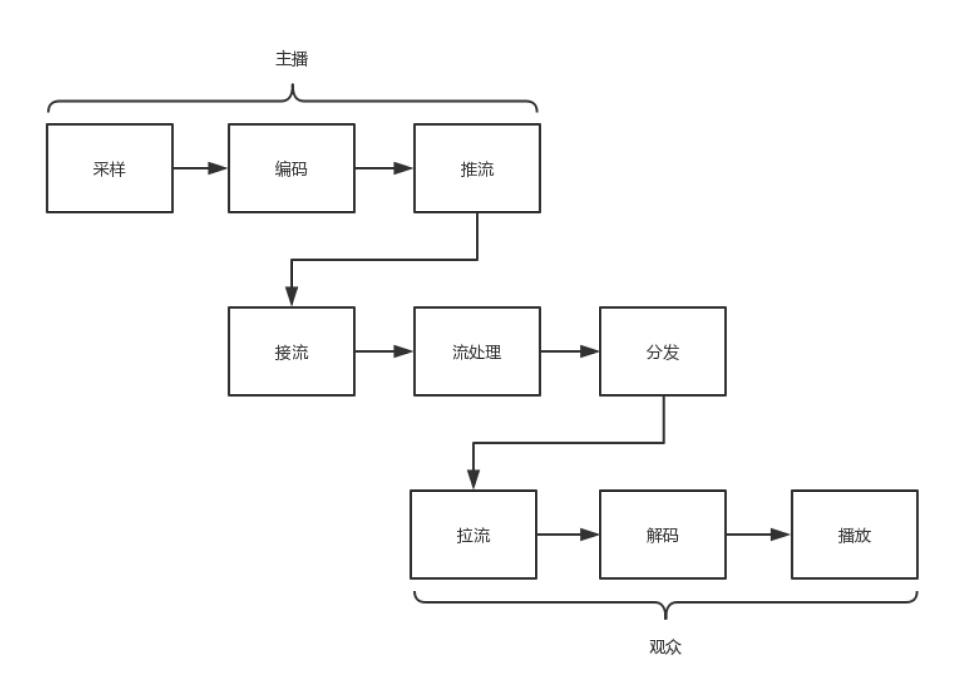
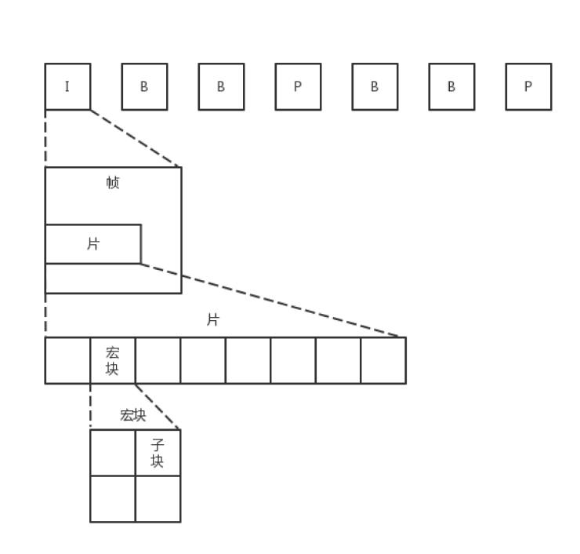
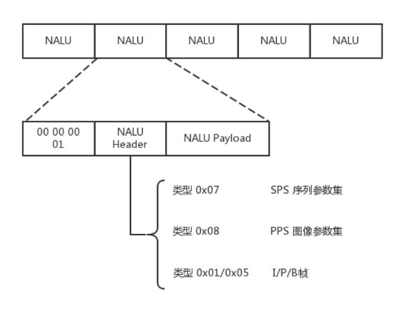
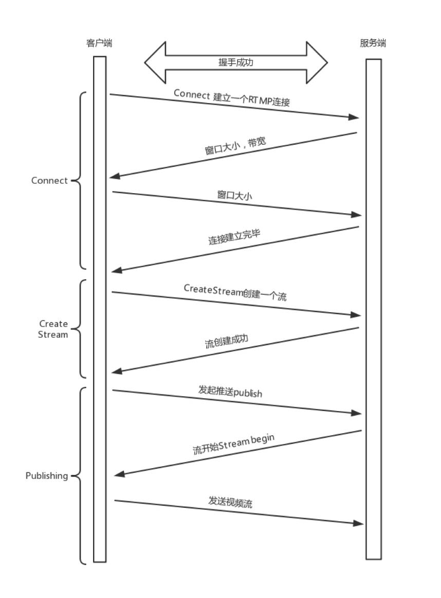
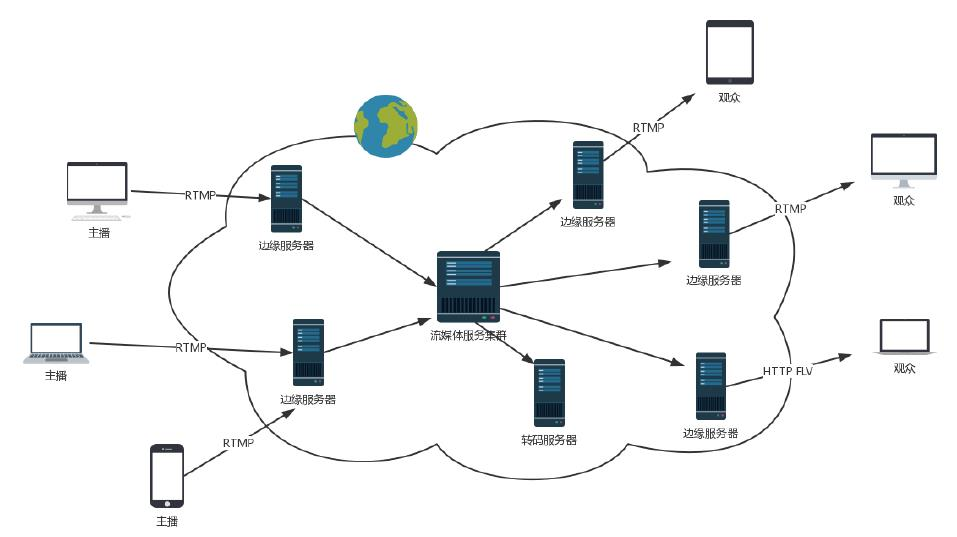
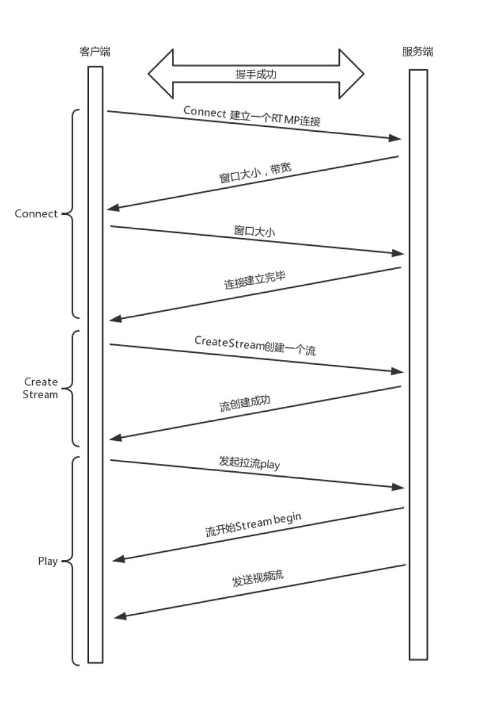

无论是直播还是点播，其实都是对于视频数据的传输。
视频是什么？其实就是快速播放一连串连续的图片。
每一张图片，我们称为一帧。只要每秒钟帧的数据足够多，也即播放得足够快。比如每秒 30 帧，以人的眼睛的敏感程度，是看不出这是一张张独
立的图片的，这就是我们常说的帧率（FPS）。
每一张图片，都是由像素组成的，假设为 1024*768。每个像素由 RGB 组成，每个 8 位，共 24 位。
那么每秒钟的视频有多大？
30 帧 × 1024 × 768 × 24 = 566,231,040Bits = 70,778,880Bytes
如果一分钟呢？ 4,246,732,800Bytes，已经是 4 个 G 了。
这个数据量实在是太大，根本没办法存储和传输。如果这样存储，你的硬盘很快就满了；如果这样传输，那多少带宽也不够用啊！
于是出现了编码，就是看如何用尽量少的 Bit 数保存视频，使播放的时候画面看起来仍然很精美。编码是一个压缩的过程。
之所以能够对视频流中的图片进行压缩，因为视频和图片有这样一些特点。
编码过程：

ITU-T（国际电信联盟电信标准化部门，ITU Telecommunication Standardization Sector）与 MPEG 联合制定了 H.264/MPEG-4 AVC。
经过编码之后，一帧一帧的图像，就变成了二进制，这个二进制可以放在一个文件里面，按照一定的格式保存起来,例如 RMVB 和 MP4。
这个二进制也可以通过某种网络协议进行封装，放在互联网上传输，这个时候就可以进行网络直播了。
网络协议将编码好的视频流，从主播端推送到服务器，在服务器上有个运行了同样协议的服务端来接收这些网络包，从而得到里面的视频流，这个过
程称为接流。
服务端接到视频流之后，可以对视频流进行一定的处理，例如转码，也即从一个编码格式，转成另一种格式。因为观众使用的客户端千差万别，要保
证他们都能看到直播。
流处理完毕之后，就可以等待观众的客户端来请求这些视频流。观众的客户端请求的过程称为拉流。
如果有非常多的观众，同时看一个视频直播，那都从一个服务器上拉流，压力太大了，因而需要一个视频的分发网络，将视频预先加载到就近的边缘
节点，这样大部分观众看的视频，是从边缘节点拉取的，就能降低服务器的压力。当观众的客户端将视频流拉下来之后，就需要进行解码，也即通过
上述过程的逆过程，将一串串看不懂的二进制，再转变成一帧帧生动的图片，在客户端播放出来，这样你就能看到美女帅哥啦。
直播过程:

虽然我们说视频是一张张图片的序列，但是如果每张图片都完整，就太大了，因而会将视频序列分成三种帧:
I 帧最完整，B 帧压缩率最高，而压缩后帧的序列，应该是在 IBBP 的间隔出现的。这就是通过时序进行编码。

在一帧中，分成多个片，每个片中分成多个宏块，每个宏块分成多个子块，这样将一张大的图分解成一个个小块，可以方便进行空间上的编码。
尽管时空非常立体的组成了一个序列，但是总归还是要压缩成一个二进制流。这个流是有结构的，是一个个的网络提取层
单元（NALU，Network Abstraction Layer Unit）。变成这种格式就是为了传输，因为网络上的传输，默认的是一个个的包，因而这里也就分
成了一个个的单元。

一个视频，可以拆分成一系列的帧，每一帧拆分成一系列的片，每一片都放在一个 NALU 里面，NALU 之间都是通过特殊的起始标识符分隔，在每
一个 I 帧的第一片前面，要插入单独保存 SPS 和 PPS 的 NALU，最终形成一个长长的 NALU 序列。
每一个 NALU 首先是一个起始标识符，用于标识 NALU 之间的间隔
NALU 头里面，主要的内容是类型 NAL Type:
Payload 里面是 NALU 承载的数据。
使用 RTMP 协议将这个二进制的流打包成网络包进行发送。这就进入了第二个过程，推流。
RTMP 是基于 TCP 的，因而肯定需要双方建立一个 TCP 的连接。在有 TCP 的连接的基础上，还需要建立一个 RTMP 的连接。
RTMP 为什么需要建立一个单独的连接？
因为它们需要商量一些事情，保证以后的传输能正常进行。主要就是两个事情，一个是版本号，如果客户端、服务器的版本号不一致，则不能工作。
另一个就是时间戳，视频播放中，时间是很重要的，后面的数据流互通的时候，经常要带上时间戳的差值，因而一开始双方就要知道对方的时间戳。
握手之后，双方需要互相传递一些控制信息，例如 Chunk 块的大小、窗口大小等。
真正传输数据的时候，还是需要创建一个流 Stream，然后通过这个 Stream 来推流 publish。
推流的过程，就是将 NALU 放在 Message 里面发送，这个也称为 RTMP Packet 包。Message 的格式就像这样。
RTMP 在收发数据的时候并不是以 Message 为单位的，而是把 Message 拆分成 Chunk 发送，而且必须在一个 Chunk 发送完成之后，才能开始
发送下一个 Chunk。每个 Chunk 中都带有 Message ID，表示属于哪个 Message，接收端也会按照这个 ID 将 Chunk 组装成 Message。
数据推送到流媒体服务器过程：

然后直播的观众就可以通过 RTMP 协议从流媒体服务器上拉取，但是这么多的用户量，都去同一个地方拉取，服务器压力会很大，而且用户分布在全
国甚至全球，如果都去统一的一个地方下载，也会时延比较长，
需要有分发网络。

